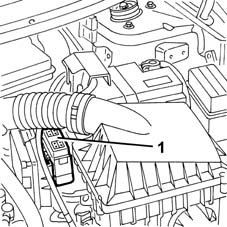
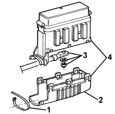

5505A16 electrical junction box (one) - r+r
- Path
- Procedures > 55 ELECTRICAL EQUIPMENT > 5505 INSTRUMENT/GUAGE ELECTRICAL WIRING > 5505A multi-function components > 5505A16 electrical junction box (one) - r+r
- Kind
- repair procedure (removal / refitting; the operation number is the code)
- Applies to
- all engines; all production periods
- Interactive page
- https://sloeber94.github.io/elrnDB-fMltpl/en/#/2891865
Applies to: all engines; all production periods
 Removing
Removing
 Refitting
RefittingOpen the bonnet lid.
1. Remove the junction unit from the mounting.

Applies to: all engines; all production periods
1. Remove the band.
2. Remove the lower protection.
3. Disconnect the wiring.
4. Recover the junction unit.

Applies to: all engines; all production periods
Refitting
RemovingCheck that the junction unit is not damaged.
Position the junction unit and connect the wiring.
Fit the lower protection.
Fit the band.
Fix the junction unit to the mounting.
Check the operation of the electrical system.